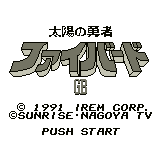

Fighbird (VGB)

This is a vertical-scrolling, shoot-em-up game. I have never heard of
this anime, but it is listed in Ken Arromdee's list. You collect various
power-ups along the way. There are also two different characters you can
choose. Some strange glitches seem to throw you into different parts of the
screen which kills you quickly.
Return to Emulator Table of Contents
Last Modified 12 Sept 1996
Created 2 Sept 1996
Luis A. Cruz
cruzl@ccs.neu.edu